Let's count some shapes
An introduction to Catalan numbers.
October 2, 2026
Today, we are going to solve a few counting problems... and remarkably discover they all have the same answer!
Dissecting polygons
For our first problem, let's discuss triangulations of a polygon. This means splitting up our polygon into triangles. For example, with a hexagon, there are 14 total triangulations:
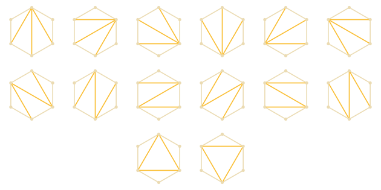
With the widget below, you can change the number of sides, to see how many triangulations there are for different types of polygons.
All the triangulations of an \(n\)-gon
Currently, our only way to find the number of triangulations of an \(n\)-sided polygon is to try enumerating all such triangulations by hand. This is an error prone and time consuming procedure. Is there a faster way? To find out, let's tabulate the answers shown in the widget above, to see if we can notice any pattern:
| number of sides | number of triangulations |
| 3 (triangle) | 1 |
| 4 (square) | 2 |
| 5 (pentagon) | 5 |
| 6 (hexagon) | 14 |
| 7 (heptagon) | 42 |
| 8 (octagon) | 132 |
| 9 (nonagon) | 429 |
| 10 (decagon) | 1430 |
At the moment, those numbers might seem pretty random -- for example, by plotting them, one can observe that no linear or quadratic function of \(n\) agrees with our table. Drats!
Let's put a pin in this problem for now, and discuss another classical combinatorics problem.
Counting paths
Let's talk a walk in the plane. We start at \((0, 0),\) and we can only take two kinds of steps: we can go up one unit, or we can go right one unit. We want to end at \((6, 6).\) However, we're never allowed to go above the line \(y=x.\) An example of this type of path is shown below.
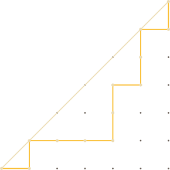
These special paths are called Dyck paths.
Now, how many Dyck paths are there from \((0, 0)\) to \((4, 4)\)? By enumerating them all, we can find 14 total; to draw them, we'll rotate the paths by \(135^{\circ},\) to make it easier to fit many on one page.
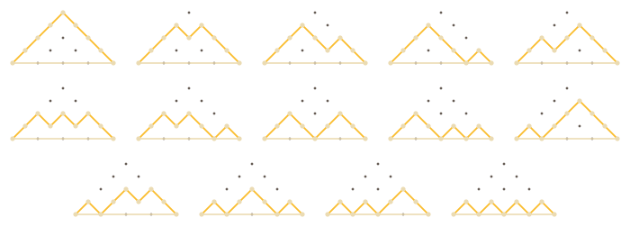
What happens to the total number of Dyck paths when we change the ending from \((6, 6)\) to \((n,n)\) for different values of \(n\)? The widget below can help you out!
All the Dyck paths of length \(n\)
This sequence \(1, 2, 5, 14, 42\) looks exactly like the sequence counting triangulations of \(n\)-gons! What is going on?!
Binary trees
Let's look at another combinatorics problem: how many binary trees are there?
A binary tree is a graph which you obtain by the following simple procedure: you start with one node; then, that node has 'two children.' From then on, you get to make choices: each node either has two new children below it, or has no children at all. You can see an example below.
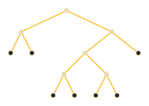
In this example, we colored nodes in white if they have children, and left nodes transparent if they have no children. People often refer to the transparent nodes as "leaves," and the white nodes as "branching nodes."
There are 14 binary trees with 4 white vertices: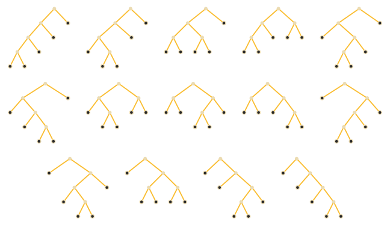
You can again try to vary the number of vertices:All the full binary trees with \(n\) branching nodes
Chord diagrams
Finally, let's now imagine you have 8 points on a circle, and you want to connect them to each other in a way such that the chords do not cross. Here, we only care about the combinatorial arrangement of the chords you draw, and not about the exact shape of the line. Counting this way, there are again 14 possible chord connections: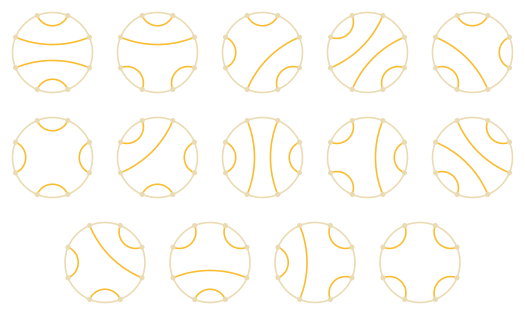
When you vary the number of points on the circle, you again see the sequence 1, 2, 5, 14, 42, ...All the chord diagrams with \(n\) chords
Catalan numbers
At this point, it seems like everything we want to count follows the pattern 1, 2, 5, 14, 42, ... This sequence is known as the Catalan numbers, and they are one of the most important sequences in combinatorics.
There's actually a simple formula for them, given by \[C_n=\frac1{n+1}{2n\choose n}=\frac{(2n)!}{n!(n+1)!}.\] For example, \[ C_4=\frac1{5}{8\choose 4}=\frac15\cdot\frac{8\cdot 7\cdot 6\cdot 5}{4\cdot 3\cdot 2\cdot 1}=14, \] which was the number we kept seeing.
But why is this sequence so ubiquitous? Let's try seeing directly why these different counting problems are actually the same.
Why are they the same number?
Dyck paths and Binary trees
So, we know there are exactly the same number (14) of Dyck paths with 4 up-steps, and binary trees with 4 branching nodes. But we could have shown there was the same number without counting all of them, by creating a bijection: that is, there is a way to pair off binary trees and Dyck paths, so that each binary tree lies in exactly one pair, and each Dyck path lies in exactly one pair. If we can pair them off like this, we know that there has to be the same number of binary trees as Dyck paths, even if we don't know how many binary trees or Dyck paths exist.
In other words, starting with a binary tree I want to construct for you a Dyck path out of it. But how do you do that? An important point to notice is that a binary tree always has a left half and a right half:
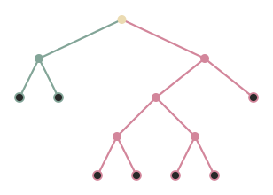
So, a binary tree can always be stored recursively as the data of two smaller binary trees. Can we similarly find a way to break any Dyck path up into two shorter Dyck paths?
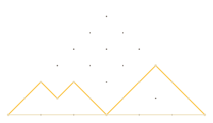
In this Dyck path, there's maybe a natural way to break it up: a Dyck path starts and ends at this horizontal line; this Dyck path actually meets the horizontal line a third time, so let's use that middle point as a breakpoint, and divide our Dyck path up into two shorter Dyck paths, like so:
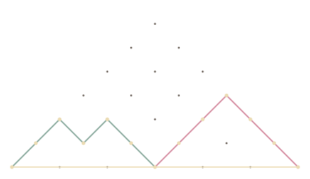
We can then Now, we can keep decomposing a Dyck path into smaller and smaller pieces this way. The same holds for binary trees: decompose them into smaller and smaller binary trees. Since they "decompose" in the same way, there should be a way to biject the two objects. Here is an explicit algorithm to do so: we start at the top node of our binary tree; Dyck paths always start with an up step, so we turn that branching node into an up move. Then, we traverse the left half of our binary tree, turning branching nodes into up-steps and leaves into down steps; finally, we traverse the right half the same way. It's easiest to get a feel for this algorithm by seeing it in action:
Turning a binary tree into a Dyck path
Dyck paths and Chord diagrams
Next, let's try to figure out why Dyck paths and chord diagrams correspond to each other. A picture speaks a thousand words, so: the following picture tells you how to go between them! In the picture, we labelled each step of the Dyck path with a number; we then connected any two edges which have an unobstructed view of each other.
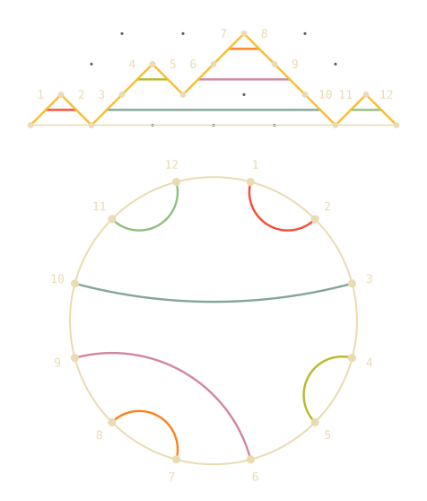
It's a fun exercise to think about how to biject dissections of a polygon with any of the other objects (Dyck paths, binary trees, chord diagrams) that appeared today!
Catalan numbers, beyond combinatorics
So, Catalan numbers count all of these objects. But you may ask: what's their use?
The author of the blog has encountered Catalan numbers "in the wild" (not when thinking about combinatorics) several times. The most surprising, perhaps, was when I was thinking about knot theory (see also this article).
Chord diagrams, such as are special examples of diagrams called tangles. These tangles can actually be made into an algebra, called the Temperley-Lieb algebra, which can be used to understand knot invariants.
It may be mysterious to you why knots, which involve crossings:
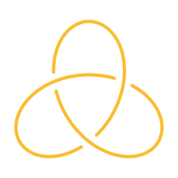
can be analyzed via chord diagrams, which don't involve any crossings. However, you can "resolve" all the crossings in a trefoil in various ways: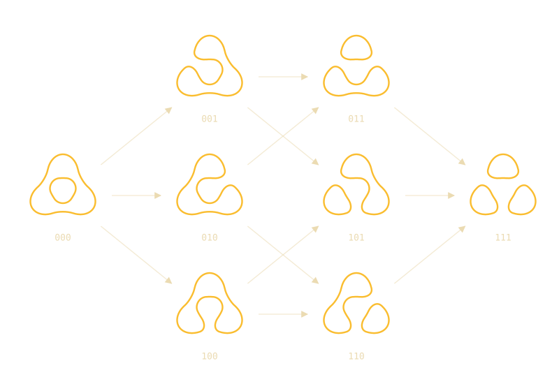
The Temperley-Lieb algebra can essentially be used to keep track of all of these ways to resolve crossings.